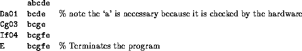

| String Computer |
Extel have just brought out their newest computer, a string processing computer dubbed the X9091. It is hoped that it will have some value in cryptography and related fields. (It is rumoured that the Taiwanese are working on a clone that will correct Stage 1 essays, but we will ignore such vapourware). This computer will accept input strings and produce output strings from them, depending on the programs loaded into them at the time. The chip is the ultimate in RISC technology--it has only three transformation instructions:
Programs for this machine are written in a form of machine code where each instruction has the format ZXdd--Z represents the code for the instruction (D, I or C), X is a character and dd represents a two digit number. A program is terminated by a special halt instruction consisting of the letter `E'. Note that each instruction works on the string in memory at the time the instruction is executed.
To see how this all works consider the following example. It is desired to transform the string `abcde' to the string `bcgfe'. This could be achieved by a series of Change commands, but is not minimal. The following program is better.

Write a program that will read in two strings (the input string and the target string) and will produce a minimal X9091 program necessary to transform the input string into the target string. Since there may be multiple solutions, only one should be produced. Any solution that satisfies these criteria will be accepted.
Input will consist of a series of lines, each line containing two strings separated by exactly one space. The strings will consist of no more than 20 lower case characters. The file will be terminated by a line consisting of a single #.
Output will consist of a series of lines, one for each line of the input. Each will consist of a program in X9091 language.
abcde bcgfe #
Da01Cg03If04E